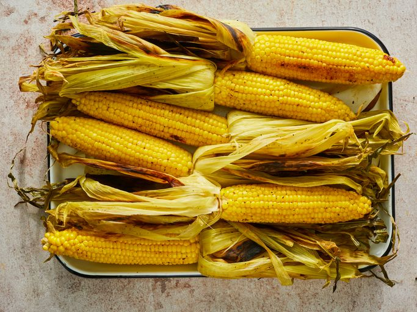

Home
Grilled Corn on the Cob

We love corn!!! and the simplest way to prepare it is grilled but it dont understimate it you will love it also
Ingredients
- 6 ears corn
- 6 tablespoons butter, softened
- salt and ground black pepper to taste
Steps
- Preheat an outdoor grill for high heat and lightly oil grate.
- Peel back corn husks and remove silk.
- Place 1 tablespoon butter, salt and pepper on each piece of corn. Close husks.
- Wrap each ear of corn tightly in aluminum foil.
- Cook on the preheated grill, turning occasionally, until tender, about 30 minutes.
- Serve hot and enjoy!